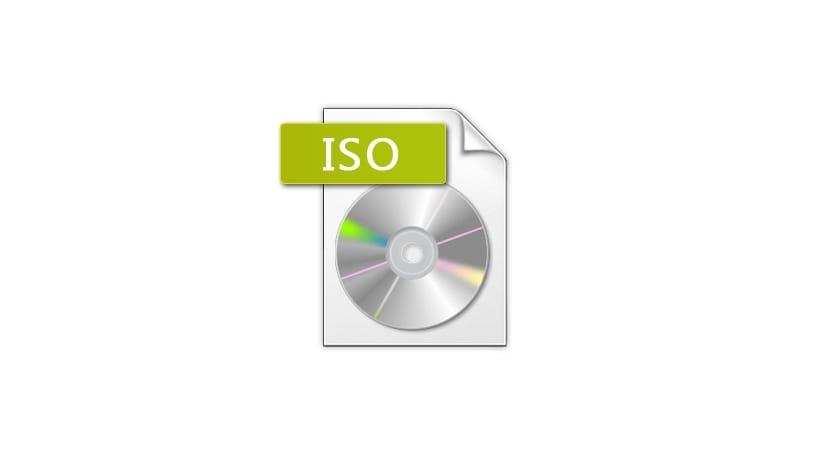
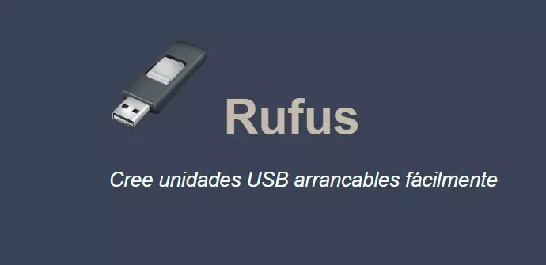
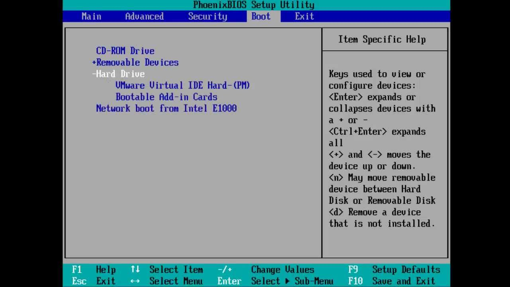
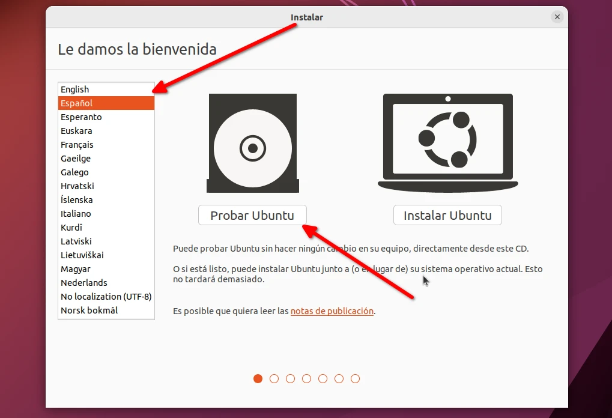
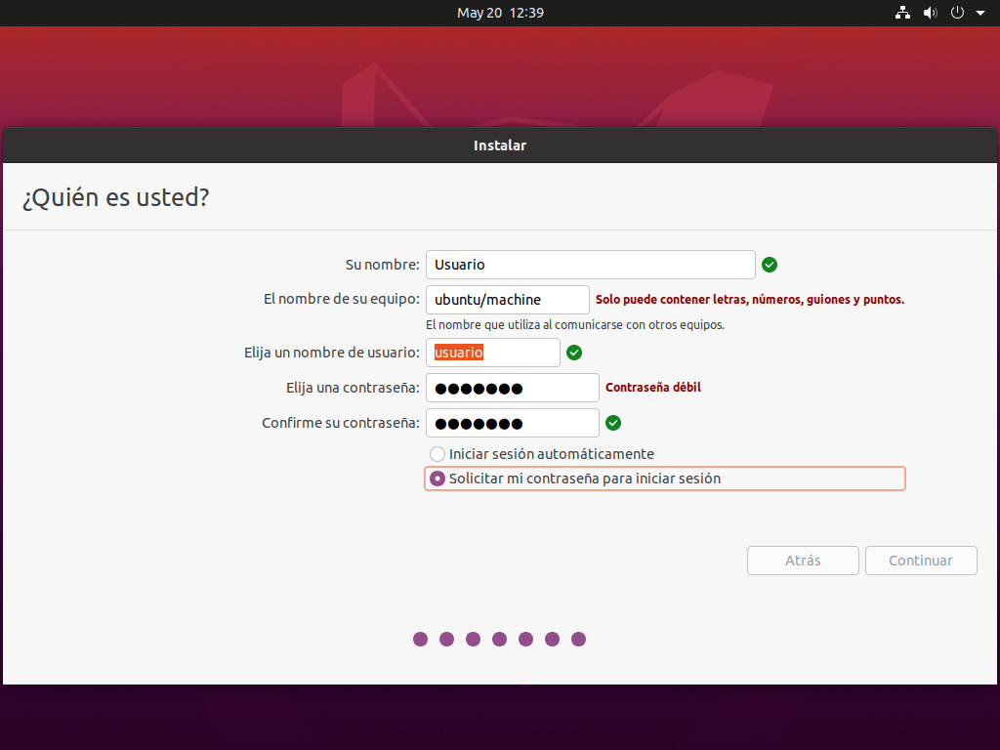
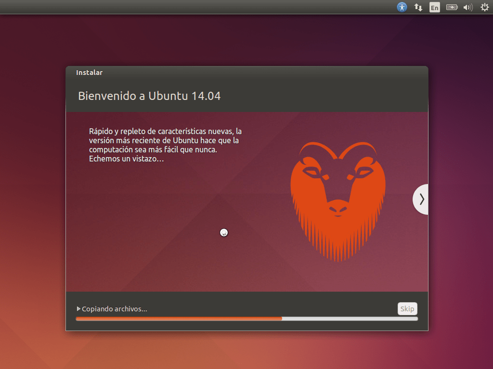
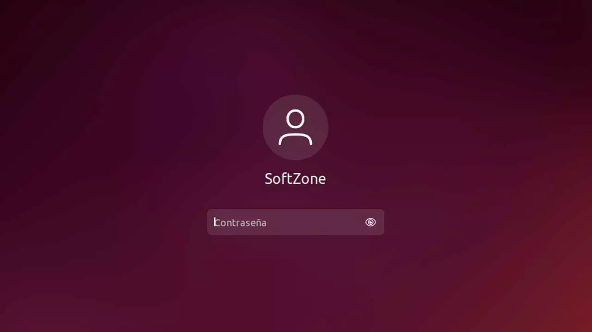

Linux

¿Qué es Linux?
Linux es un sistema operativo de código abierto basado en el kernel de Linux. Fue creado por Linus Torvalds en 1991 y se ha convertido en uno de los sistemas operativos más populares en el mundo de la informática. Linux se utiliza en una amplia variedad de dispositivos, desde servidores y supercomputadoras hasta teléfonos móviles y sistemas integrados.
¿Para qué sirve Linux?
Linux es utilizado por diversas razones, como su estabilidad, seguridad y flexibilidad. Se utiliza en servidores web, servidores de bases de datos, sistemas embebidos, sistemas de control, dispositivos móviles y muchas otras aplicaciones. Además, es una opción popular entre los desarrolladores y entusiastas de la tecnología debido a su naturaleza de código abierto, lo que significa que su código fuente está disponible para que cualquiera lo modifique y mejore.
Instalación de Linux
La instalación de Linux puede variar dependiendo de la distribución que elija. Las distribuciones más populares incluyen Ubuntu, Fedora, Debian y Linux Mint. A continuación, te daré una visión general del proceso de instalación:
- Descarga la imagen ISO de la distribución Linux que desees desde el sitio web oficial. 
- Cree un medio de instalación, como un DVD o una memoria USB, utilizando una herramienta como Rufus o Etcher. 
- Arranca tu computadora desde el medio de instalacion. 
- Sigue las instrucciones en pantalla para seleccionar el idioma, la ubicación y configurar las opciones de particionado del disco. 
- Configura el nombre de usuario y la contraseña. 
- Espera a que finalice la instalación y reinicia tu computadora. 
- Inicia sesión con tu nombre de usuario y contraseña para acceder a tu nuevo sistema Linux. 
Comandos básicos de Linux
Aquí tienes algunos comandos básicos y ampliamente utilizados en Linux:
-
Comando pwd
El comando pwd significa “directorio de trabajo de impresión” y es un comando de Linux simple pero útil. Este comando se usa para mostrar el nombre de su directorio actual, lo que puede ser útil al navegar por el sistema de archivos.Este es un ejemplo de la consola Terminal que puedes usar en el panel de control cPanel de Dongee.pwd/home/usuario
-
Comando cd
El comando cd de Linux se usa para cambiar el directorio de trabajo actual de un usuario. Se puede usar para subir un nivel en el sistema de archivos, o se le puede dar un directorio como argumento para cambiar el directorio de trabajo.
Para ir al home por defecto del usuario:Para devolverse o salir desde la carpeta en la que estás posicionado:cdPara ingresar a un folder:cd ..Para saltar entre directorios:cd carpetacd /home/usuario/public_html -
Comando ls
El comando ls es una utilidad de línea de comandos que enumera el contenido de un directorio .
Se utiliza para enumerar archivos y directorios en sistemas operativos Unix y similares a Unix, incluido Linux.
El comando ls se puede utilizar con los siguientes parámetros:- l (lista en formato largo)
- a (enumera todos los archivos, incluidos los ocultos)
- t (ordenar por hora de última modificación)
- S (ordenar por tamaño de archivo)
Ver la lista completa de archivos dentro de carpetasls -la
ls -l
ls -lR
-
Comando cat
Cat, aunque es un comando simple en su nivel más básico, es uno de los comandos de Linux más utilizados en el sistema. Significa “concatenar” y se usa para mostrar lo que hay dentro de un archivo de texto . Solo puede usar el comando cat si conoce el nombre y la extensión del archivo que desea mostrar.
Lee simplemente el archivo: cat : archivoCrea un nuevo archivocat archivo.txt
Une dos archivos el archivo1 y archivo2 y los envía al archivo3cat < archivo
cat archivo1 archivo2 < archivo3
-
Comando cp
El comando ‘cp’ es una utilidad de línea de comandos que copia archivos. Es uno de los comandos más útiles del sistema Linux y puede copiar archivos o directorios a otro directorio. El comando cp se puede usar con los comandos ‘cp’ o ‘mv’ para mover archivos.
Copia la imagen dentro de la carpeta imagenesCopia la imagen y si encuentra otra con el mismo nombre la reemplaza, el back slash o “\” se usa para que el comando que se ejecuta, corra de manera forzada, sin preguntas. Debes tener cuidado con este carácter.cp foto.jpg public_html/imagenes/
cp foto.jpg public_html/imagenes/
-
Comando mv
El comando mv es un comando de Linux que se usa para mover y renombrar archivos y directorios.
Renombrando una imágenMover una imagenmv foto.jpg nombrecambiado.jpg
mv foto.jpg carpeta/imagenes2/
-
Comando mkdir
El comando mkdir es un comando muy importante que se usa para crear directorios y subdirectorios que son una parte integral del sistema operativo Linux. Este comando solo se puede ejecutar desde la terminal y no necesita ningún argumento cuando se usa. Todo lo que necesita hacer es escribir mkdir en la terminal e inmediatamente se creará un directorio para usted.
Crea una carpeta dentro de otra llamadaCrea una carpeta dentro de otra recursivamentemkdir /home/imagenes
mkdir -pv /home/imagenes/otracarpeta/otracarpeta/yotramas
-
Comando rmdir
La idea detrás de este comando específico es eliminar un directorio vacío y su contenido del sistema de archivos. Para hacerlo, deberá ingresar lo siguiente:rmdir carpeta
-
Comando rm
El comando rm se usa en sistemas Linux para eliminar archivos y directorios. El comando se puede personalizar con una variedad de opciones, como el indicador -r, que elimina recursivamente los archivos de un directorio determinado.
Borrar un archivo completamenteBorra la carpeta completamente con todo adentrorm imagen.jpg
Aquí se usa el flag f que es forzar, es decir adiós archivos sin preguntar nada 😲rm -r carpeta
rm -fr
-
Comando touch
El comando touch se usa a menudo para cambiar la marca de tiempo en un archivo. El comando touch también se puede utilizar para otros fines, el más usado es para crear un archivo vacío.
Crea un archivo vacío llamado archivo.txt. Por ejemplo podrías crear un archivo llamado index.html para cuando acabas de crear tu hosting y aún no tienes el diseño listo, con esto haces más segura tu cuenta ya que los rastreadores y bots no podrán ver que tienes dentro de tu carpeta de archivos.Toma el archivo y pone la fecha en el formato año, mes, día, hora y minuto.touch archivo.txt
touch -t yyyymmddhhmm archivo.txt
-
Comando grep
grep es un comando UNIX que filtra la salida de un comando desde la entrada estándar. Se utiliza para encontrar patrones en un archivo o en el sistema.
En este ejemplo grep busca en el archivo.txt todo lo que tenga la palabra “texto”grep busca la palabra “texto” no importa si está escrita en mayúsculas o minúsculas.grep texto archivo.txt
Este es uno de los usos más comunes, primero se le pasa el comando cat que lee el archivo.txt y luego extrae todas las líneas que tengan el texto “textofiltro”.grep -i texto archivo.txt
En este ejemplo usa -c para contar el número de líneas que contienen la palabra textofiltro.cat archivo.txt | grep textofiltro
cat archivo.txt | grep -c textofiltro
-
Comando dig
El comando dig de Linux se puede usar para consultar los registros DNS del dominio ingresando el siguiente comando: “dig domain.com”.dig apple.com
-
Comando chmod
El comando chmod se usa para cambiar los permisos de un archivo. Los permisos están representados por letras, y cada letra representa un tipo diferente de acceso.
El comando chmod se puede usar para cambiar el permiso de cualquier usuario o grupo en el archivo. El permiso para todos los demás usuarios no se cambiará.
Aquí añadimos permisos 755 los más usados por seguridad. Establecerá el permiso para que todos los usuarios lean y ejecuten, pero no escribanEsto establecerá el permiso para que todos los usuarios lean, escriban y ejecuten. No recomendado.chmod 755 archivo.jpg
Se usa -R para hacerlo de manera recursiva en todos los archivos de la carpeta public_html.chmod 777 archivo.jpg
chmod -R 755 public_html
-
Comando uname
El comando uname es una utilidad del sistema Linux que muestra información sobre el sistema, como el nombre del kernel, el nombre del host, el sistema operativo, la fecha de lanzamiento y la versión.uname
-
Comando top
El comando superior es una aplicación de terminal que le permite ver las tareas más intensivas de la CPU que se ejecutan en su sistema. Fue diseñado para ser un visor de procesos interactivo.top
-
Comando history
El comando de historial o history se utiliza para mostrar al usuario lo que ha hecho en el sistema. Puede enumerar el contenido del directorio, iniciar programas y más.
lista los comandos anteriormente digitadosElimina el histórico para evitar que sea usado en contra tuya 🙂history
history -c
-
Comando man
Man es una utilidad de línea de comandos que proporciona páginas de manual completas de las herramientas de Unix. Se puede usar junto con otras herramientas y scripts para permitir que el usuario busque información sobre comandos y datos del sistema relacionados.
Puedes ver todo el manual del comando wget, son textos realmente extensos y bien completos.man wget
-
Comando echo
Man es una utilidad de línea de comandos que proporciona páginas de manual completas de las herramientas de Unix. Se puede usar junto con otras herramientas y scripts para permitir que el usuario busque información sobre comandos y datos del sistema relacionados.
Aquí imprime la frase “Esto es un ejemplo” y la manda al archivo archivo.txtecho Esto es un ejemplo
echo ‘Esto es un ejemplo’
echo ‘Esto es un ejemplo’ < archivo.txt
-
Comando vi
VI es el editor de modo texto de Linux. Es tal vez uno de los comandos más potentes en la cantidad de opciones que logra hacer. Por ejemplo, puedes abrir un archivo de código, buscar un texto, reemplazarlo o sobreescribirlo. Para muchos es ciencia espacial, pero en realidad si lo aprendes a usar estas un paso más adelante que otros administradores. Por el momento solo te enseñaremos a crear un “hello world” creando un archivo, salvando y saliendo de él.
Para ingresar y crear un archivo en blanco llamado archivo.txt Ya adentro puedes pulsar la S para insertar Escribe un “hello world” Escribe :wq para salirvi archivo.txt
Estos son solo algunos ejemplos básicos, pero Linux tiene una gran cantidad de comandos y opciones adicionales que puedes explorar según tus necesidades específicas. Puede consultar la documentación de Linux o buscar tutoriales más detallados para ampliar su conocimiento sobre comandos y su uso.
Recuerda que Linux es un sistema operativo muy flexible y personalizable, por lo que hay muchas formas de realizar una tarea en particular. ¡Diviértete explorando y aprendiendo!